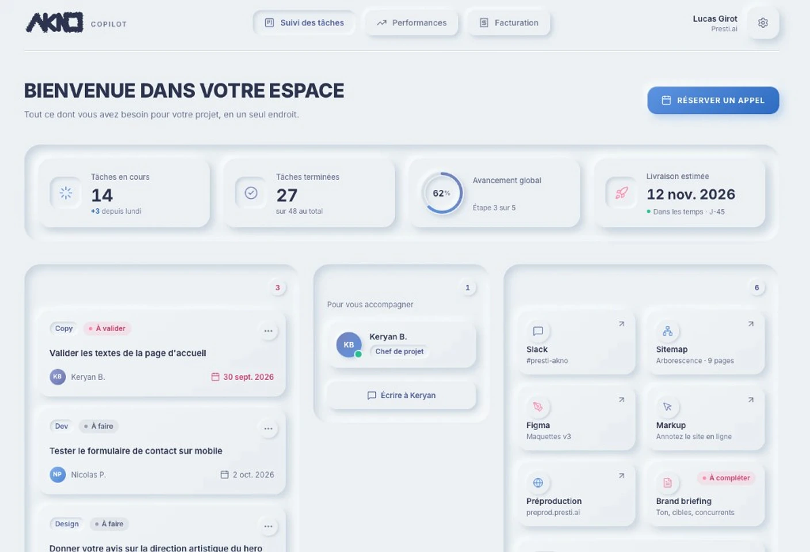
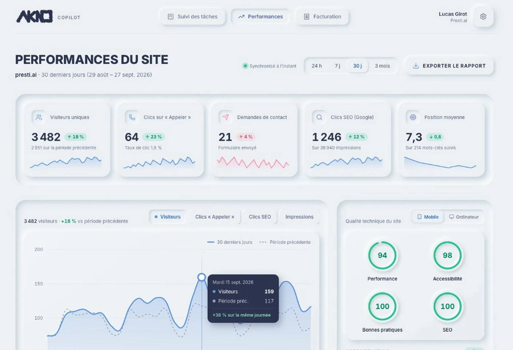
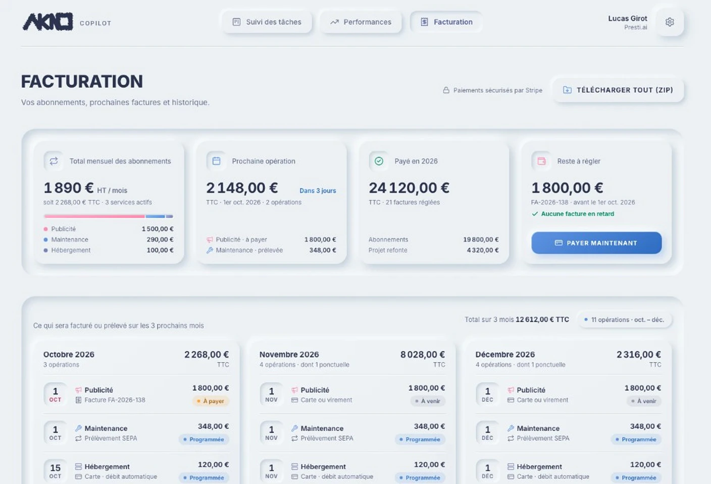

Une présence qui inspire confiance dès
3 secondes
00Studio web · Annecy
Pour les dirigeants qui veulent un site qui convertit.
On conçoit ton site, on lit tes data, et on pousse ton trafic.
Si tu te reconnais, tu n'es pas seul. Beaucoup d'entreprises sont exactement dans ce cas — on est là pour débloquer ça.
Les mots s'allument quand ils passent dans le faisceau.
Je veux débloquer mon siteInterrupteur · position OFF
Joli,
mais éteint ?
Fais défiler pour allumer
Interrupteur · position ON
Pas juste
un site joli.
Une présence qui convertit, inspire confiance, et reste solide après la mise en ligne.
Pas juste un site joli. Une présence qui convertit, inspire confiance, et reste solide après la mise en ligne.
3 secondes
Un seul studio pour concevoir, dessiner et faire connaître votre site.
akno.fr · Studio web · Annecy · Des sites qui ramènent des clients.
Création ou refonte : un site sur mesure, rapide et pensé pour transformer les visites en demandes.
Des parcours clairs où chaque écran a un rôle : clarifier, rassurer, convertir.
Être trouvé sur les bonnes recherches, avec un site qui charge vite.
Site, design et SEO. Séparés, c’est moyen. Ensemble, c’est un système.
Je réserve mon appelSite vitrine pour un plombier à Nantes et son agglomération (Rezé, Saint-Herblain, Orvault…) : fuite, WC bouché, chauffe-eau. Prix annoncé avant travaux, sélecteur « Où est la panne ? », étapes de l'appel à la réparation, FAQ et demande de rappel.
Site vitrine pour un menuisier-ébéniste à la Croix-Rousse (Lyon 4e) : cuisines, dressings, escaliers et bibliothèques en bois massif, dessinés et fabriqués à l'atelier. Choix des essences de bois, méthode en quatre étapes, FAQ et demande de projet.
Location et vente de voitures d'exception entre Annecy, Megève et Genève : livraison au chalet ou à l'aéroport, avec ou sans chauffeur. Flotte de six voitures, recherche de disponibilités par dates, vente et reprise, conciergerie.
Refonte du site de l'Atelier Sublimessence, artisan d'art peintre sur mobilier à Epagny Metz-Tessy (Annecy) : restauration de meubles anciens, patines, effets matière et décors peints. Avant / après de vrais meubles, présentation de l'atelier, prestations et diagnostic à domicile.
Site d'une exposition immersive : une heure dans la peinture, de Georges de La Tour à Klimt, avec des chefs-d'œuvre du domaine public projetés en très grand format. Un parcours de la bougie au plein jour, un effet lanterne et la réservation d'un créneau.
Tu veux ce niveau pour ton site ?
Trois étapes. Un interlocuteur. Du cadrage au lancement.
On clarifie quoi construire — et pourquoi.
On design pour convertir, pas juste pour être beau.
On livre un site rapide, propre, prêt à performer.
4–8 semaines · un seul interlocuteur
Je démarre mon projetAvancement, performances et factures : tout ce qui concerne votre site, en temps réel, au même endroit.
Découvrir Copilot


Interface de démonstration · données d'exempleMême besoin. Deux façons très différentes de le traiter. À gauche, l'interrupteur est sur ON.
Tu veux la méthode AKNO ?
Je réserve mon appelJe construis des sites qui ramènent des clients.
Fondateur d'AKNO. Sites sur mesure pour dirigeants qui en ont assez du « joli mais inutile ».
Stratégie, UI/UX, code et SEO — un interlocuteur du brief au livré. Clair, fluide, performant : un site qui fait le job d'un commercial digital.
Vous connaissez un dirigeant qui a besoin d'un site qui rapporte ? Présentez-le-nous : vous êtes récompensé, et il démarre son projet avec un avantage.
Vous êtes récompensé dès que le projet de votre filleul est réglé. Prime doublée dès le 3e parrainage.
Son avantage est appliqué dès la signature.
Conditions, bonus fidélité et bonus publicité : tout est détaillé.
Des réponses claires. Si la tienne n'y est pas, on en parle en 20 min.
Encore une question ?
Réserver un appelCadrage en 20 minutes. On regarde ton existant, tes objectifs, et si AKNO est le bon fit.